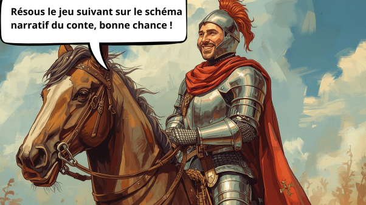

Le pont d'Arthur
Le chevalier Arthur

le chevalier Arthur
Arthur en armure brillante se tient fièrement Arthur en armure brillante se tient fièrement sur son cheval, il vous demande de résoudre le jeu suivant sur le schéma narratif du conte.
connais-tu bien ton schéma narratif ?